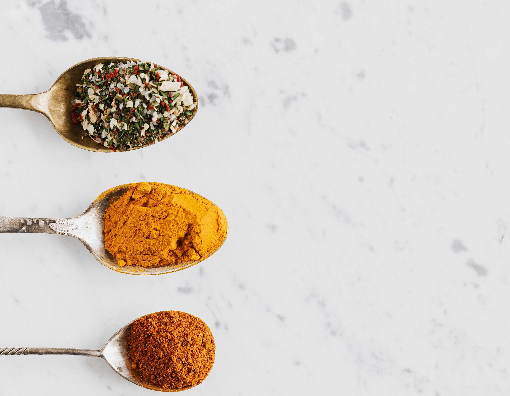

Our Story
Natures flavours was created through a team project as part of the Code First Girls web development programme. Combining our passion for food and coding we made this website. We wanted to create a website of nutritious yummy recipes any one can cook. Whether you're just starting to become plant-based or if you're a veteran we're sure that you'll enjoy these flavoursome dishes!